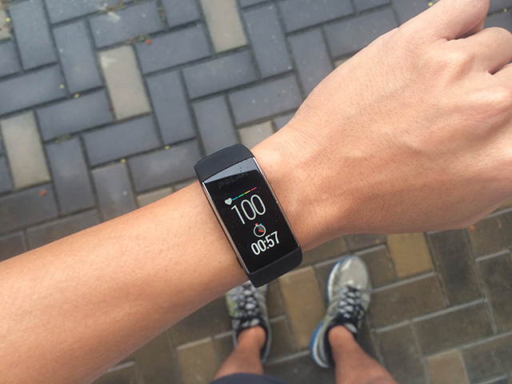
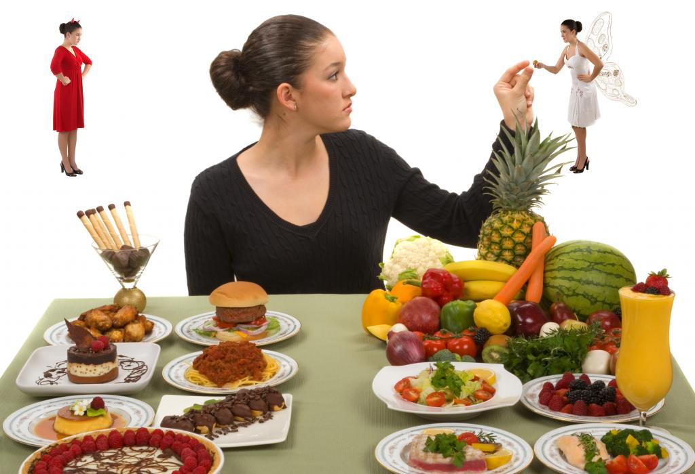

|
Спорт не гарантирует здоровья, наоборот, непродуманные занятия могут стать причиной травмы и надолго оттолкнуть вас от тренировок. Если вы решили, что обойдётесь без тренера, учитывайте несколько важных моментов, чтобы занятия были комфортными, безопасными и приятными. 1. Отслеживайте пульсовые зоныЧасто новички, не знакомые с правилами беговой тренировки, срываются с места в карьер. Покрутив суставами на месте, они бегут изо всех сил, так что пульс поднимается до 70–80% от максимальной частоты сердечных сокращений (ЧСС). Поскольку новичок не может выдержать такой темп, очень скоро он задохнётся, почувствует тошноту и остановится. Более того, такие нагрузки могут плохо сказаться на сердечно-сосудистой системе, особенно если у начинающего спортсмена есть лишний вес. В итоге тренировка окажется неэффективной и, скорее всего, будет последней. Чтобы избежать этого, обязательно следите за пульсом и повышайте нагрузки постепенно. Начинайте кардиотренировку с разминки. Это лёгкая активность на пульсе в 50–60% от максимума. За ней следует жиросжигающая зона на пульсе в 60–70% от предельной ЧСС. Активность в этой зоне ощущается довольно комфортной, не вызывает тошноты и сильной одышки и при этом помогает сжечь побольше жира. Аэробная тренировка начинается с пульса в 70–80%. Она улучшает здоровье сердечно-сосудистой системы, увеличивает объём лёгких и продолжает сжигать жир. Вот примерный план для первой пробежки: 10 минут в зоне разминки, 10 минут в зоне жиросжигания и 10 минут в аэробной зоне. Постепенно увеличивайте время, проведённое в аэробной зоне, до 15 минут, и не забудьте про 5-минутную заминку на пульсе в 50–60%. Чтобы отслеживать свою ЧСС и пульсовые зоны во время бега, используйте кардиодатчики или фитнес-браслеты. Многие не любят нагрудные датчики: их неудобно надевать и снимать, они давят и сползают. В то же время, по сравнению с фитнес-браслетом, они обеспечивают более точные показатели ЧСС. 2. Меняйте привычки в повседневной жизниДля хороших результатов в спорте и фитнесе важны не только ваши тренировки, но и то, как вы ведёте себя в повседневной жизни. Активность, питание, сон, стрессы — всё это влияет на ваши спортивные показатели и снижает риск травм. Недостаток сна снижает уровень тестостерона, что негативно влияет на композицию тела, мешает вам сбросить вес и набрать мышечную массу. Старайтесь спать 7–8 часов в день и ложиться примерно в одно и то же время, чтобы проще было уснуть. Стресс, особенно сильный и продолжительный, негативно сказывается на работе сердечно-сосудистой системы, повышает давление, снижает способность к концентрации и уменьшает мотивацию. Кроме того, стресс увеличивает количество кортизола, который подавляет выработку тестостерона и угнетает иммунитет. Помимо сна и стресса стоит позаботиться и о ежедневной активности. Сидячий образ жизни пагубно влияет на осанку, снижает энергозатраты и делает все ваши попытки бороться с лишним весом менее эффективными. Кроме того, для избавления от лишнего веса диетологи советуют пить больше воды — это имеет доказанный положительный эффект для похудения даже без подсчёта калорий. |
|---|